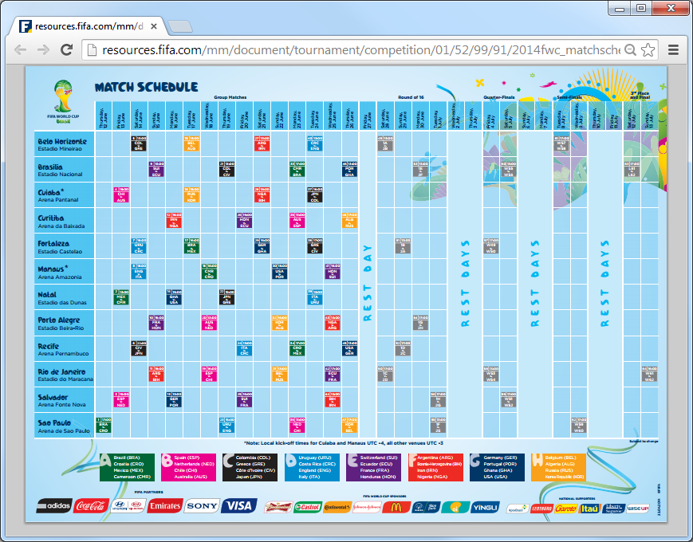
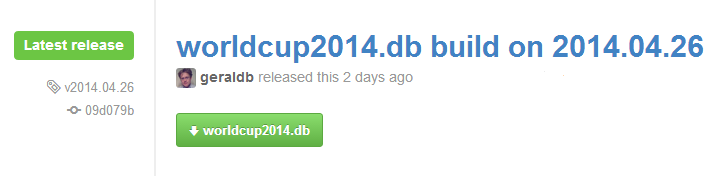
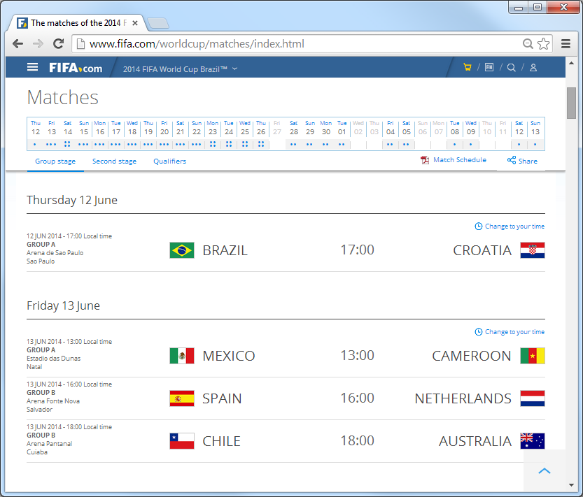
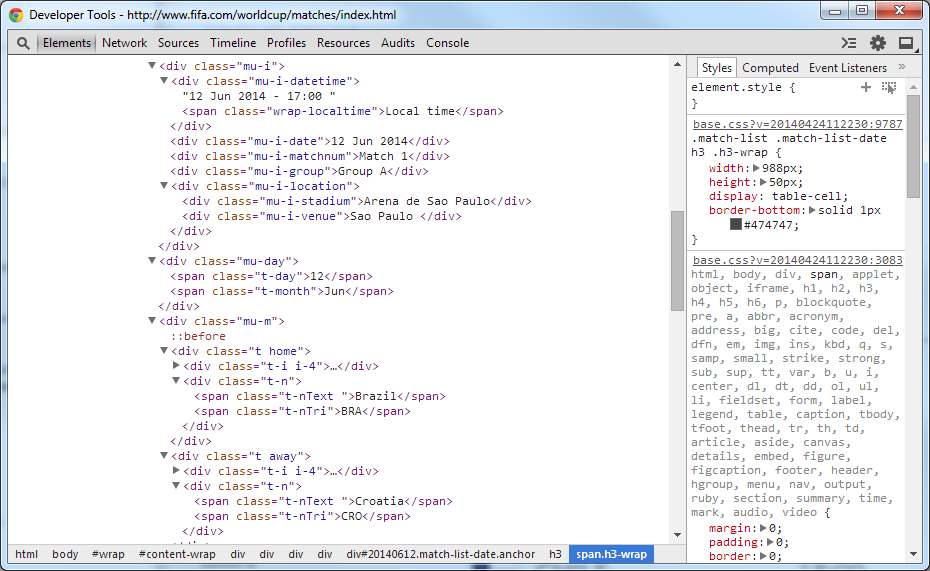
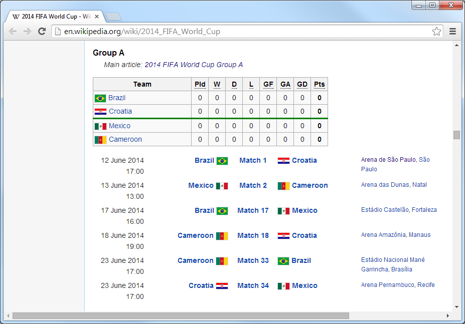

Let’s Build A World Cup Widget in JavaScript
football.db?footballdb.widget.js - v1.0footballdb.widget.js - v2.0<football-js> - v3.0When: 12 June - 13 July; Starts in:
What:
32 teams – Australia, Iran, Japan, South Korea, Algeria, Cameroon, Ghana, Ivory Coast, Nigeria, Costa Rica, Honduras, Mexico, United States, Argentina, Brazil, Chile, Colombia, Ecuador, Uruguay, Belgium, Bosnia and Herzegovina, Croatia, England, France, Germany, Greece, Italy, Netherlands, Portugal, Russia, Spain, Switzerland
12 cities – Rio de Janeiro, São Paulo, Brasília, Fortaleza, Belo Horizonte, Porto Alegre, Salvador, Recife, Cuiabá, Manaus, Natal, Curitiba
First let’s use an HTTP JSON API. Example:
GET /event/world.2014/teams
{
"event": {
"key": "world.2014", "title": "World Cup 2014"
},
"teams": [
{ "key": "gre", "title": "Greece", "code": "GRE" },
{ "key": "ned", "title": "Netherlands", "code": "NED" },
{ "key": "ger", "title": "Germany", "code": "GER" },
{ "key": "por", "title": "Portugal", "code": "POR" },
...
]
}
Let’s ask the intertubes (let’s google json world cup brazil
or post a question on the open data
stackexchange ‘Any Open Data Sets for the (Football) World Cup (in Brazil 2014)?’).
Nothing. Nada. Nichts. Niente. Zilch. Zero.
football.db?Public domain football data sets offering free open football data for the World Cup in Brazil 2014 and more.
Free self-hosted HTTP JSON API service for football data, for example:
worldcup2014.db SQLite Databasesportdb command line tool$ sportdb serve
Services available include:
/event/world.2014/teams – List all teams/event/world.2014/rounds – List all rounds (matchdays)/event/world.2014/round/20 – List all matches in a round e.g. - 20th Round (=> Final) GET /event/world.2014/round/1
{
"event": { "key": "world.2014", "title": "World Cup 2014" },
"round": { "pos": 1, "title": "Matchday 1" },
"games": [
{
"team1_key": "bra",
"team1_title": "Brazil",
"team1_code": "BRA",
"team2_key": "cro",
"team2_title": "Croatia",
"team2_code": "CRO",
"play_at": "2014/06/12",
"score1": null,
"score2": null,
"score1ot": null,
"score2ot": null,
"score1p": null,
"score2p": null
}
]
}
Open (Free) Data <=> Copyright © FIFA 2014. All Rights Reserved.
Example 1:
fifa.com.

Open (Free) Data <=> Copyright © FIFA 2014. All Rights Reserved.
Example 2:
github.com/openfootball.

Q: Best “License” for Open Data?
A: Public Domain¹ (No License. No Copyright. No Rights Reserved.)
Q: Why?
A: Keep it simple².
________
¹ Also sometimes “rebranded” or known as Creative Commons Zero (CC0) or Unlicense.
² Full “License” Text Example: The data, schema n scripts are dedicated to the public domain. Use it as you please with no restrictions whatsoever.
Structured Data <=> Free-Style Text
Example 1:

Structured Data <=> Free-Style Text
Example 1:

Structured Data <=> Free-Style Text
Example 2:

Structured Data <=> Free-Style Text
Example 2:
Cut-n-Paste Text:
12 June 2014 17:00 Brazil Match 1 Croatia Arena de São Paulo, São Paulo
13 June 2014 13:00 Mexico Match 2 Cameroon Arena das Dunas, Natal
17 June 2014 16:00 Brazil Match 17 Mexico Estádio Castelão, Fortaleza
18 June 2014 19:00 Cameroon Match 18 Croatia Arena Amazônia, Manaus
23 June 2014 17:00 Cameroon Match 33 Brazil Estádio Nacional Mané Garrincha, Brasília
23 June 2014 17:00 Croatia Match 34 Mexico Arena Pernambuco, Recife
Wikipedia Source:
===Group A===
{{main|2014 FIFA World Cup Group A}}
{{Fb cl2 header navbar}}
{{{Fb cl2 team |t={{fb|BRA}} |w=0 |d=0 |l=0 |gf=0 |ga=0 |bc=}}}}
{{{Fb cl2 team |t={{fb|CRO}} |w=0 |d=0 |l=0 |gf=0 |ga=0 |bc=|border=green}}}}
{{{Fb cl2 team |t={{fb|MEX}} |w=0 |d=0 |l=0 |gf=0 |ga=0 |bc=}}}}
{{{Fb cl2 team |t={{fb|CMR}} |w=0 |d=0 |l=0 |gf=0 |ga=0 |bc=}}}}
|}
{{{Football box
|date=12 June 2014
|time=17:00
|team1={{fb-rt|BRA}}
|score=[[2014 FIFA World Cup Group A#Brazil v Croatia|Match 1]]
|report=
|team2={{fb|CRO}}
|goals1=
|goals2=
|stadium=[[Arena Corinthians|Arena de São Paulo]], [[São Paulo]]
|attendance=
|referee=
}}}
{{{Football box
|date=13 June 2014
|time=13:00
|team1={{fb-rt|MEX}}
|score=[[2014 FIFA World Cup Group A#Mexico v Cameroon|Match 2]]
|report=
|team2={{fb|CMR}}
|goals1=
|goals2=
|stadium=[[Arena das Dunas]], [[Natal, Rio Grande do Norte|Natal]]
|attendance=
|referee=
}}}
Structured Data <=> Free-Style Text
“Classic” Structured Data Formats:
Structured Data <=> Free-Style Text
but also
“New” Structured Data Formats:
Example - Open Football Match Schedule Language:
(1) Thu Jun/12 17:00 Brazil - Croatia @ Arena de São Paulo, São Paulo (UTC-3)
(2) Fri Jun/13 13:00 Mexico - Cameroon @ Estádio das Dunas, Natal (UTC-3)
(Source: world-cup/2014/cup.txt)
Q: Why? Why invent yet another data format? Why?
A: Best of both worlds, that is, 1) looks n feels like free-form plain text - easy-to-read and easy-to-write - 2) but offers a 100-% data accuracy guarantee (when loading into SQL tables, for example).
Mini Languages for Structured Data
Example - Open Football Match Schedule Language:
############################
# World Cup 2014 Brazil
Group A | Brazil Croatia Mexico Cameroon
Group B | Spain Netherlands Chile Australia
Group C | Colombia Greece Côte d'Ivoire Japan
Group D | Uruguay Costa Rica England Italy
Group E | Switzerland Ecuador France Honduras
Group F | Argentina Bosnia-Herzegovina Iran Nigeria
Group G | Germany Portugal Ghana United States
Group H | Belgium Algeria Russia South Korea
Matchday 1 | Thu Jun/12
Matchday 2 | Fri Jun/13
Matchday 3 | Sat Jun/14
...
(16) Round of 16 | Sat Jun/28 - Tue Jul/1
(17) Quarter-finals | Fri Jul/4 - Sat Jul/5
(18) Semi-finals | Tue Jul/8 - Wed Jul/9
(19) Match for third place | Sat Jul/12
(20) Final | Sun Jul/13
Group A:
(1) Thu Jun/12 17:00 Brazil - Croatia @ Arena de São Paulo, São Paulo (UTC-3)
(2) Fri Jun/13 13:00 Mexico - Cameroon @ Estádio das Dunas, Natal (UTC-3)
(17) Tue Jun/17 16:00 Brazil - Mexico @ Estádio Castelão, Fortaleza (UTC-3)
(18) Wed Jun/18 18:00 Cameroon - Croatia @ Arena Amazônia, Manaus (UTC-4)
(33) Mon Jun/23 17:00 Cameroon - Brazil @ Brasília (UTC-3)
(34) Mon Jun/23 17:00 Croatia - Mexico @ Recife (UTC-3)
Group B:
(3) Fri Jun/13 16:00 Spain - Netherlands @ Arena Fonte Nova, Salvador (UTC-3)
(4) Fri Jun/13 18:00 Chile - Australia @ Arena Pantanal, Cuiabá (UTC-4)
(19) Wed Jun/18 16:00 Spain - Chile @ Estádio do Maracanã, Rio de Janeiro (UTC-3)
(20) Wed Jun/18 13:00 Australia - Netherlands @ Estádio Beira-Rio, Porto Alegre (UTC-3)
(35) Mon Jun/23 13:00 Australia - Spain @ Curitiba (UTC-3)
(36) Mon Jun/23 13:00 Netherlands - Chile @ São Paulo (UTC-3)
...
(Source: world-cup/2014/cup.txt)
footballdb.widget.jsUse like:
<div id='world'¹></div>
<script>
var widget = footballdb_widget_new( '#world'¹ );
widget.update( 'world.2014'², '2'³ ); // world cup in brazil 2014, matchday 2
widget.update( 'world.2014'², '20'³ ); // world cup in brazil 2014, final (e.g. round 20)
</script>
_________
¹ - selector id for div
² - event key for world cup in brazil 2014
³ - round 2 (e.g. matchday 2); round 20 (e.g. final)
Results in:
World Cup 2014 - Matchday 2
2014/06/13 | Mexico (MEX) - Cameroon (CMR)
2014/06/13 | Spain (ESP) - Netherlands (NED)
2014/06/13 | Chile (CHI) - Australia (AUS)
footballdb.widget.js - Sourcevar footballdb_widget_new = function( widget_id, api_path_prefix ) {
var _api_path_prefix = '';
var _$widget;
function _init( widget_id, api_path_prefix )
{
_api_path_prefix = api_path_prefix;
_$widget = $( widget_id );
}
function _update( event_key, round_pos )
{
var api_link = _api_path_prefix + "/event/" + event_key + "/round/" + round_pos;
$.getJSON( api_link, function(json) {
var snippet = ""; // build up a hypertext (html) snippet to add/append
snippet += "<h3>";
snippet += json.event.title;
snippet += " - ";
snippet += json.round.title;
snippet += "</h3>";
snippet += "<ul>";
$.each( json.games, function( index, game ) {
snippet += "<li>";
snippet += game.play_at + " | ";
snippet += game.team1_title + " (" + game.team1_code +")";
if( game.score1 != null && game.score2 != null ) {
if( game.score1et != null && game.score2et != null ) {
if ( game.score1p != null && game.score2p != null ) {
snippet += " " + game.score1p + "-" + game.score2p + " pen /";
}
snippet += " " + game.score1et + "-" + game.score2et + " a.e.t. /";
}
snippet += " " + game.score1 + "-" + game.score2;
}
else
snippet += " - ";
snippet += " " + game.team2_title + " (" + game.team2_code +")";
snippet += "</li>";
});
snippet += "</ul>";
_$widget.html( snippet );
}); // getJSON
} // fn _update
// call c'tor/constructor
_init( widget_id, api_path_prefix );
// return/export public api
return {
update: _update
}
} // fn football_widget_new
(Source: github.com/geraldb/football.js)
footballdb.widget.js - v2.0underscore.js)require.js)football.db JSON API module / wrapperfootballdb.widget.js - v2.0 - Templatestemplates/events.html:
<h3>
<%= event.title %>
-
<%= round.title %>
</h3>
templates/games.html:
<table>
<% _.each( games, function( game, index ) { %>
<tr>
<td>
<%= game.play_at %>
</td>
<td style='text-align: right;'>
<%= game.team1_title %> (<%= game.team1_code %>)
</td>
<td>
<% if( game.score1 != null && game.score2 != null ) { %>
<% if( game.score1ot != null && game.score2ot != null ) { %>
<% if ( game.score1p != null && game.score2p != null ) { %>
<%= game.score1p %> - <%= game.score2p %> pen /
<% } %>
<%= game.score1ot %> - <%= game.score2ot %> a.e.t. /
<% } %>
<%= game.score1 %> - <%= game.score2 %>
<% } else { %>
-
<% } %>
</td>
<td>
<%= game.team2_title %> (<%= game.team2_code %>)
</td>
</tr>
<% }); %>
</table>
footballdb.widget.js - v2.0 - ModulesModules w/ require.js:
football/api.js
football/widget.js
football/templates/event.html
football/templates/games.html
football/templates/rounds.html
Template Usage in JavaScript (w/ require.js and underscore.js):
var gamesTpl = require( 'text!football/templates/games.html' );
var renderGames = _.template( gamesTpl ); // returns a fn for reuse
...
$games.html( renderGames( { games: data.games } ) );
football/widget.js:
define( function(require) {
require( 'utils' );
var Api = require( 'football/api' );
var eventTpl = require( 'text!football/templates/event.html' ),
roundsTpl = require( 'text!football/templates/rounds.html' ),
gamesTpl = require( 'text!football/templates/games.html' );
var renderEvent = _.template( eventTpl ),
renderRounds = _.template( roundsTpl ),
renderGames = _.template( gamesTpl );
var Widget = {};
Widget.create = function( id, opts ) {
var $el,
$event, // used for event header
$rounds, // used for rounds
$games; // used for round details (matches/games)
...
footballdb.widget.js - v2.0 - API Wrapper Modulefootball/api.js:
define( function() {
var Api = {};
Api.create = function( opts ) {
var defaults = { baseUrl: 'http://footballdb.herokuapp.com/api/v1' };
var settings;
function init( opts ) {
settings = _.extend( {}, defaults, opts );
}
function fetch( path, onsuccess ) {
var url = settings.baseUrl + path + '?callback=?';
$.getJSON( url, onsuccess );
}
function fetchRounds( event, onsuccess ) {
fetch( '/event/' + event + '/rounds', onsuccess );
}
function fetchRound( event, round, onsuccess ) {
fetch( '/event/' + event + '/round/' + round, onsuccess );
}
init( opts ); // call "c'tor/constructor"
// return/export public api
return {
fetchRound: fetchRound,
fetchRounds: fetchRounds,
}
} // end fn Api.create
return Api;
}); // end define
<football-js> - v3.0<football-js event='world.2014'></football-js>The old way in JavaScript. Usage Example:
<script src='js/football.js'></script>
<div id='world'></div>
<script>
var widget = footballdb_widget_new( '#world' );
widget.update( 'world.2014', '2' ); // world cup in brazil 2014, matchday 2
</script>
The new way:
<link rel='import' href='football-js.html'> <!-- HTML Imports -->
<football-js event='world.2014'></football-js> <!-- custom tag use -->
What’s X-Tag? What’s Polymer?
x-tags.org)- JavaScript library by Mozilla - lets you use and build custom tags for all modern browserspolymer-project.org) - JavaScript Library by Google - lets you use and build custom tags for all modern browsersNew Web Standard Building Blocks
<element>) - W3C SpeccreateShadowRoot()) - W3C Spec<template>) - W3C Specrepeat='{{ greetings }}') - JavaScript Library<football-js> - v3.0 (Cont.)football-js.html:
<polymer-element name='football-js' attributes='event'>
<template>
<style>
... [your styles here] ...
</style>
... [your (model-driven) views here] ...
</template>
<script>
... [your scripts here] ...
</script>
</polymer-element>
MDV (Model Driven Views):
<template>
<div>
<h3>
{{ data.event.title }} - {{ data.round.title }}
</h3>
<table>
<template repeat='{{data.games}}'>
<tr>
<td>
{{ play_at }}
</td>
<td>
{{ team1_title }} ({{ team1_code }})
</td>
<td>
{{ score1 }} - {{ score2 }}
</td>
<td>
{{ team2_title }} ({{ team2_code }})
</td>
</tr>
</template>
</table>
</template>
<football-js> - v3.0Usage:
<!DOCTYPE html>
<html>
<head>
<meta charset='utf-8'>
<title>football.js</title>
<script src='js/libs/polymer.min.js'></script>
<link rel='import' href='football-js.html'>
</head>
<body>
<football-js event='world.2014'></football-js>
</body>
</html>
More Open Data Projects
beer.db?A free open public domain beer database n schema for use in any (programming) language (e.g. uses plain text fixtures/data sets). Example:
### Brewery
guinness, St. James's Gate Brewery / Guinness Brewery, 1759, Dublin
### Beer
Guinness|Guinness Draught, 4.2%, irish_dry_stout|dry_stout|stout
GET /beer/guinnessGet beer by key /beer/:key
GET /beer/guinness
{
"beer":
{
"key":"guinness",
"title":"Guinness",
"synonyms": "Guinness Draught",
"abv":"4.2",
"srm":null,
"og":null,
"tags":["irish_dry_stout","dry_stout","stout"],
"brewery":
{
"key": "guinness",
"title": "St. James's Gate Brewery / Guinness Brewery"
},
"country":
{
"key":"ie",
"title":"Irland"
}
}
}